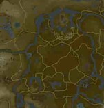
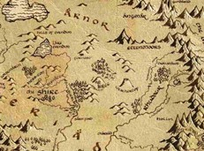

The Cartographer’s Guide to Fantasy Worlds is a one-stop location for all your favorite maps and worldbuilding! Learn about the behind-the-scenes for fictional worlds that you always wished you could visit, and the cultures within them!
Come join us on the adventure you always wanted to go on!
Start ExploringPopular Maps
Hyrule
Breath of the Wild

Explore the breathtaking sights of Hyrule, from The Legend of Zelda: Breath of the Wild. Find out more about the geography and culture of this video game world!
GoMiddle-Earth
Lord of the Rings

Have you ever wondered why Elves see Middle-earth as flat even though it’s round? Learn about that and hundreds of other fun facts about Tolkin’s Lord of the Rings
Go